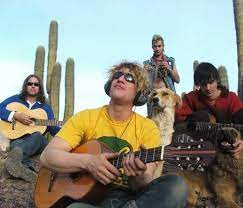

Intoxicados
Intoxicados es una banda de rock argentino formada en 2000 por el cantante y compositor Pity Álvarez, después de la disolución de su banda anterior, Viejas Locas. Junto con el guitarrista Gustavo "Nata" Rivero, el bajista Sergio Dawi y el baterista Federico Pertusi, Intoxicados lanzó su álbum debut "No Es Solo Rock N' Roll" en 2003.
La música de Intoxicados se caracteriza por su fusión de rock con reggae, ska, punk y otros géneros, y por las letras introspectivas y poéticas de Pity Álvarez. Canciones como "Fuego", "Una Vela" y "Reggae para Mirtha" se convirtieron en éxitos instantáneos en la escena musical argentina, y la banda se ganó rápidamente una base de fans leales y devotos.
Desafortunadamente, la carrera de Intoxicados se vio interrumpida por la muerte de Gustavo "Nata" Rivero en 2006, y la banda se disolvió poco después. Pity Álvarez continuó su carrera musical como solista, pero su legado como líder de Intoxicados sigue siendo muy importante para la música argentina.
A pesar de su corta carrera, Intoxicados dejó una huella profunda en la música argentina, influenciando a una generación de músicos y compositores con su estilo ecléctico y su poesía melancólica y conmovedora. Aunque la banda nunca logró el éxito internacional de algunas de sus contemporáneas, su música sigue siendo amada y venerada por los fans del rock argentino y sigue siendo una parte importante del legado musical de Argentina.